Demo of the EssexAid and the Matlab Wrapper
This is a quick demo showing how to use the Essex aid matlab wrapper. The wrapper performs the jobs that the real time framework performs in the lab.
Contents
General usage examples
First off, load up the essex aid
x = EssexAid_WrapClass
x =
EssexAid_WrapClass
Properties:
sr: 48000
numSamples: 1024
stimulusUSER: [1x96000 double]
audiometry_dB: [6x1 double]
mainGain_dB: [6x1 double]
TC_dBHL: [6x1 double]
TM_dBHL: [6x1 double]
DRNLc: [6x1 double]
ARtau: 0.0600
ARthreshold_dB: 85
MOCtau: 0.4500
MOCfactor: 0.5000
bwOct: 0.5000
filterOrder: 2
useGTF: 0
MOCrecord: []
channelBFs: [11x1 double]
numChannels: 11
aidOPnice: []
Ommiting the semicolon shows a number of properties that are accesible to the user of the class.
The default stimulus for the aid is a sequence of tone pips with increasing level that are separated by silent intervals. This is a useful stimulus for debugging and inspection of the aid performance. However, it is easy to override this default to use any user defined mono or stereo stimulus. The wrapper also overrides Matlab's default plot function, giving a quick way to inspect what the aid is doing. Plotting the wrapper object before running the aid algorithm manually will just show the envelope of the input stimulus.
plot(x)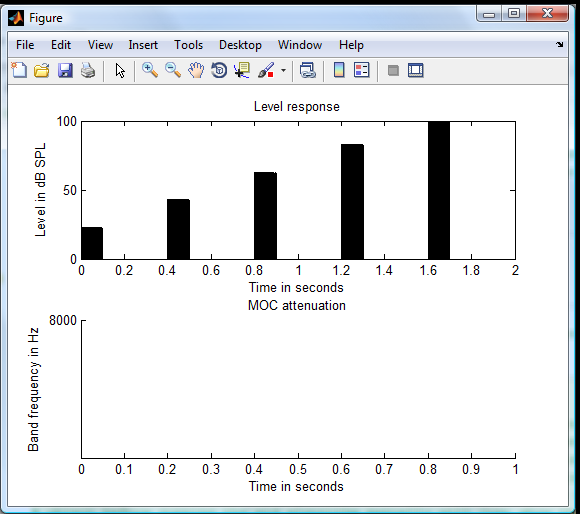
It is also possible to input any stimulus type by setting the properties manually. The wrapper expects the input stimulus to be in units of pascals. Therefore, to input a 70 dB Gaussian noise with a 25 kHz sample rate we would do the following . .
newSr = 25e3; nz = randn(newSr/2, 1); nz = nz./sqrt(mean(nz.^2)); %normalize RMS to 1 nz = nz * 20e-6 * 10^(70/20); %scale to 70 dB SPL x.stimulusUSER = nz; x.sr = newSr; plot(x)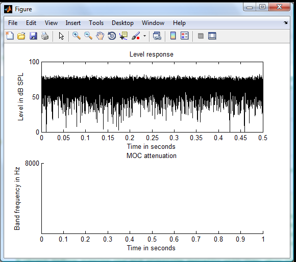
It is also possible to specify the stimulus and sample rate when instantiating a new instance of the class as shown by the following example.
x = EssexAid_WrapClass(newSr, nz); plot(x)
The wrapper class contains a handy helper function for generating different types of tone sequences that can be used as follows.
silDur = 0.1; %seconds pulseDur = 0.1; %seconds dBlevs = [20 30 40 50 60 70]; freq = 1000; sampleRate = x.sr; x.stimulusUSER = EssexAid_WrapClass.pipSequence(sampleRate, freq, dBlevs, pulseDur, silDur);
This new stimulus envelope can be viewed by using the plot method once again
plot(x)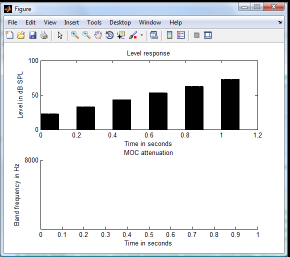
First set up a presciption for a typical 40 dB flat loss
x.audiometry_dB = 40*ones(6,1);
The audiometry_dB property is the pure tone thresholds of the listener in dB SPL at frequencies octave spaced between 0.25 and 8 kHz. The wrapper will interpolate these values accordingly, depending on the channel resolution. the channel resolution can be altered by changing the bwOct parameter.
Next we can set the gain of the aid to 50% of the loss.
x.mainGain_dB = x.audiometry_dB * 0.5;
We shall assume that this imaginary person has no residual compression and so we shall set the instantaneous compression threshold to 20 dB above the listener's detection threshold.
x.TC_dBHL = 20*ones(6,1);
To keep things simple to understand, for the first example, we will disable the MOC response by setting the MOC threshold to a high level.
x.TM_dBHL = 200*ones(6,1);
Now process the stimulus using the hearing aid algorithm and view the output
x = x.processStim; plot(x)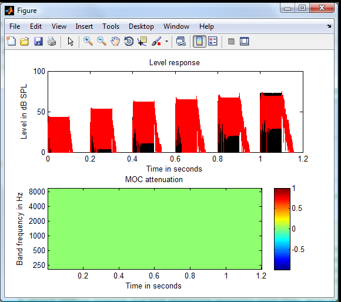
The aid output is shown in red and the original stimulus is shown in black. The first pulse was input at 20 dB spl and comes out at 40 dB SPL after the linear gain. The compression threshold in this prescription was set to 20 dB HL (60 dB SPL for this listener). The knee point of the instantaneous compression can be clearly seen at 60 dB SPL output from the aid.
The effects of the aid are generally easier to understand if the main gain and pure tone thresholds are set to zero. That way we can analyse the signal processing without having to constantly make the mental conversions between SPL and HL. The main gain is applied after all of the interesting signal processing anyway, so for the rest of this demo, the listener's pure tone thresholds and main gain are set to zero.
x.audiometry_dB = zeros(size(x.audiometry_dB)); x.mainGain_dB = x.audiometry_dB;
I will also set the compression threshold slightly higher for this example
x.TC_dBHL = 40*ones(6,1);
The compression knee is now obvious against the backdrop of the input signal.
x = x.processStim; plot(x)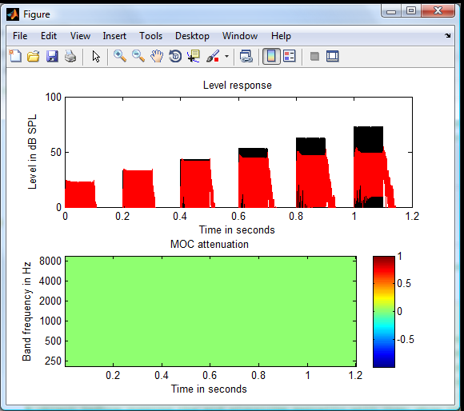
Now to enable the MOC feedback compression. A reasonable value for this is around 10 dB HL (10 dB SPL also for this example).
x.TM_dBHL = 10*ones(6,1); x = x.processStim; plot(x)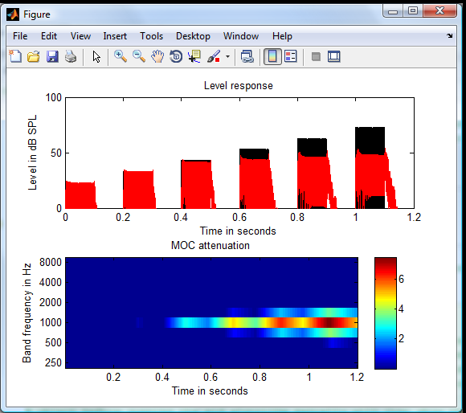
The MOC can be seen to activate below the instantaneous compression threshold but only towards the end of the pulses. The effects of the MOC are better observed in a continuous background. The MOC should slowly drag the overall level of the sound towards threshold, depending on the continuous background level. The instantaneous compression will take care of any loud impulsive sounds.
To illustrate this better we will use a sequence of tone pips in a background of continuous noise. This example also shows the action of the acoustic reflex simulation, blocking the input to the subsequent processing from going much above 85 dB SPL.
silDur = 0.2; %seconds pulseDur = 0.025; %seconds dBlevs = [70 80 90 70 80 90]; freq = 1000; sampleRate = x.sr; x.stimulusUSER = EssexAid_WrapClass.pipSequence(sampleRate, freq, dBlevs, pulseDur, silDur); nz = randn(size(x.stimulusUSER)); nz = nz./sqrt(mean(nz.^2)); %normalize RMS to 1 nz = nz * 20e-6 * 10^(50/20); %scale to 50 dB SPL x.stimulusUSER = x.stimulusUSER + nz; x = x.processStim; plot(x)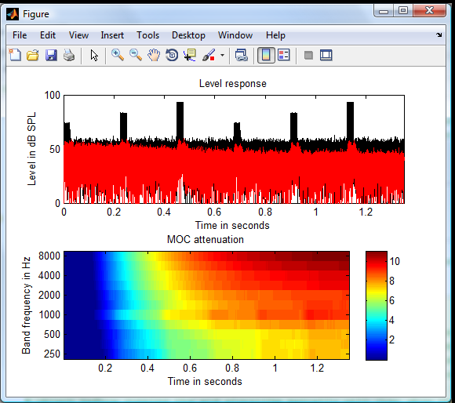
The strength of the MOC response can be tuned using the MOC factor parameter. This controls the dB attenuation applied to the next frame by multiplication of the factor with the number of decibels that the output of the second filter exceeds a threshold in the current frame. The instantaneous compression acts as a soft limiter on the maximum attenuation that the MOC can apply.
x.MOCfactor = 0.95; x = x.processStim; plot(x)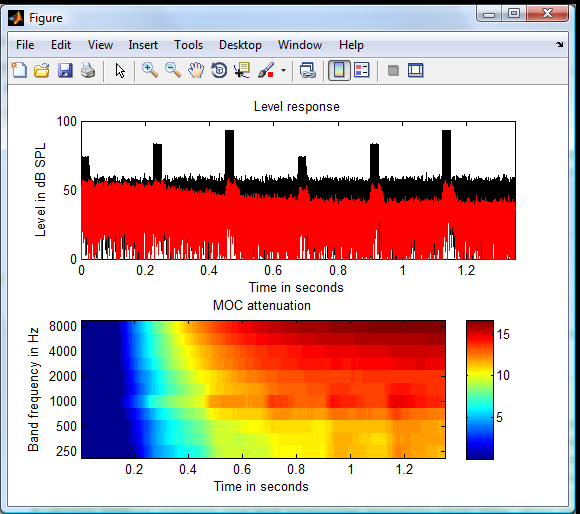
If at any point you want to use the output of the aid for your own analysis, you can directly use, or copy the aidOPnice parameter. This is the aid output reshaped to the shape of the input stimulus. This is useful for implementing the wrapper in the speech recognition framework or in multithreshold. The aid requires a buffered stereo signal, but the wrapper will handle all the conversion behind the scenes and then convert the stimulus back to a friendly format. This will hopefully make inserting the aid into any existing analysis code reliable and painless.
myOutput = x.aidOPnice;
Impulse responses
The following code shows how to display the impulse response (94 dB click) for the default aid settings.
% Start with a fresh wrapper with an impulse in it (1 pascal)
x = EssexAid_WrapClass(48e3, [zeros(999,1); 1; zeros(3000, 1)]);
x = x.processStim;
plot(x)
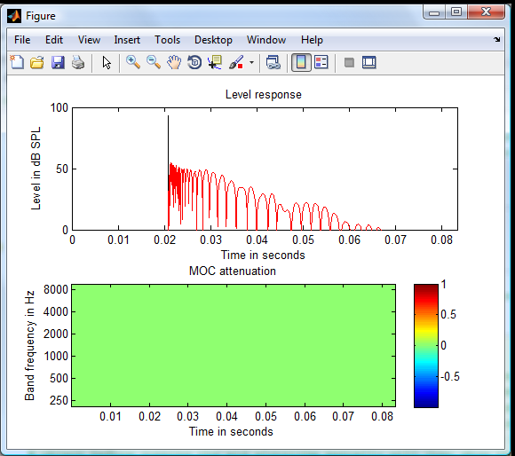 The ringing from the butterworth filters is quite long, especially when the channel count is increased and the corresponding filter bandwidths become narrower. In the latest version of the aid, it is possible to switch the filters to gammatone.
x.useGTF = true;
x.filterOrder = 3; % order used in the non linear path of the DRNL
x = x.processStim;
plot(x)
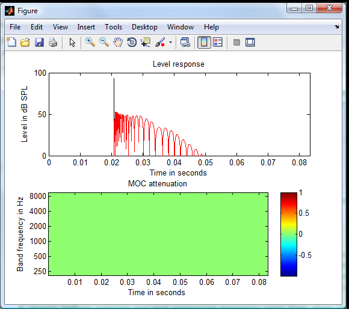 The impulse response can be observed with all of the compression disabled by increasing all of the compression thresholds.
x.TC_dBHL = 200*ones(6,1); x.TM_dBHL = 200*ones(6,1); x.ARthreshold_dB = 200; x = x.processStim; plot(x)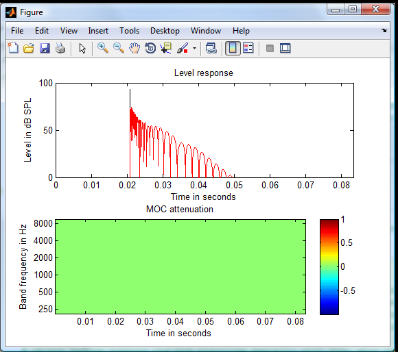
Responses to Gaussian pulse;
The response to a Gaussian pulse can be seen by using code such as the following.
t0 = ceil(10e-3*x.sr); %Centre of pulse at 10 ms
n = 1:x.sr/8;
width = 50;
x. stimulusUSER = exp(-.5 * ((n-t0)/width).^2);
The delay in the "centre of mass" of the output of algorithm in response to a Gaussian pulse in strongly dependent on the bandwidth of the filters used.
One octave
x.bwOct = 1/1; x = x.processStim; plot(x);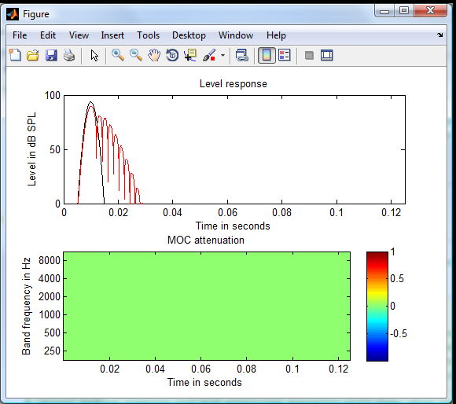
Half octave
x.bwOct = 1/2; x = x.processStim; plot(x);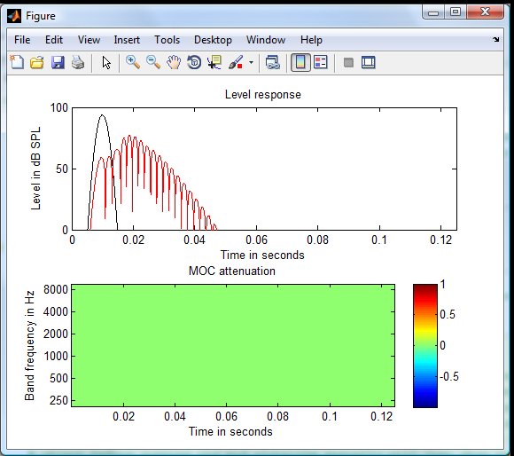
Third octave
x.bwOct = 1/3; x = x.processStim; plot(x);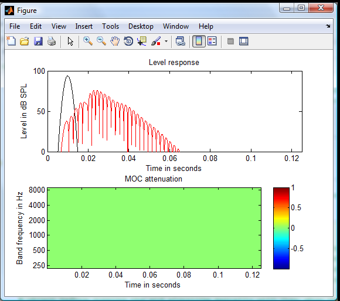
The delay is relatively independent of the filter type and filter order, but the following demo shows that the ringing extends for much longer when using a butterworth type filter.
x.filterOrder = 2; x.useGTF = false; x.bwOct = 1/2; x = x.processStim; plot(x);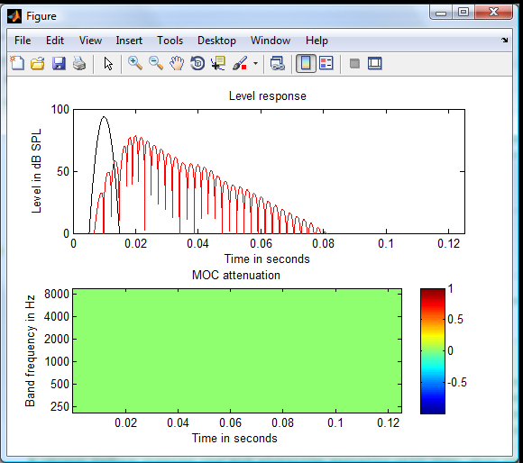
At the moment, we are leaning towards using 3rd order Gammatone filters with 1/2 octave bandwidth. This makes the heaing aid filter parameters very close to the default MAP parameters.
x.filterOrder = 3; x.useGTF = true; x = x.processStim; plot(x);
The summation of all of the channels at the output of a Gammatone filter will not give a completely flat spectrum like one could expect from a bank of even order butterworth filters. However, this is unlikely to be an issue in terms of subjective sound quality.
The following plots show the effects of the compression on the delay. Firstly the instantaneous compression.
x.TC_dBHL = 40*ones(size(x.TC_dBHL)); x = x.processStim; plot(x);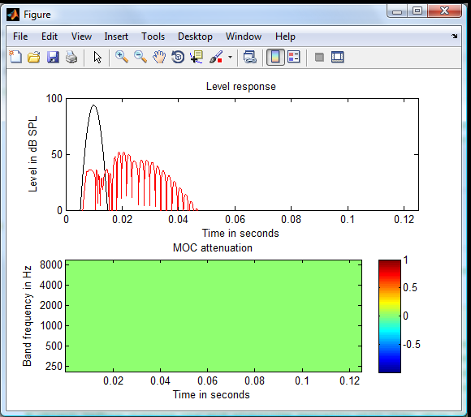
%...and then the MOC feedback compression also
x.TM_dBHL = 10*ones(size(x.TM_dBHL));
x = x.processStim;
plot(x);